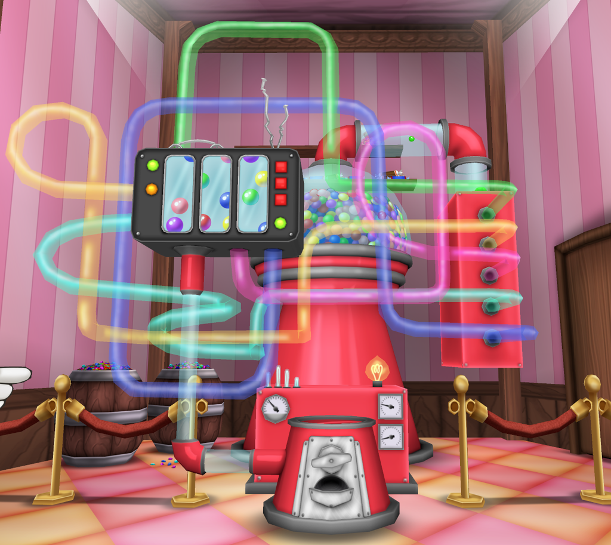
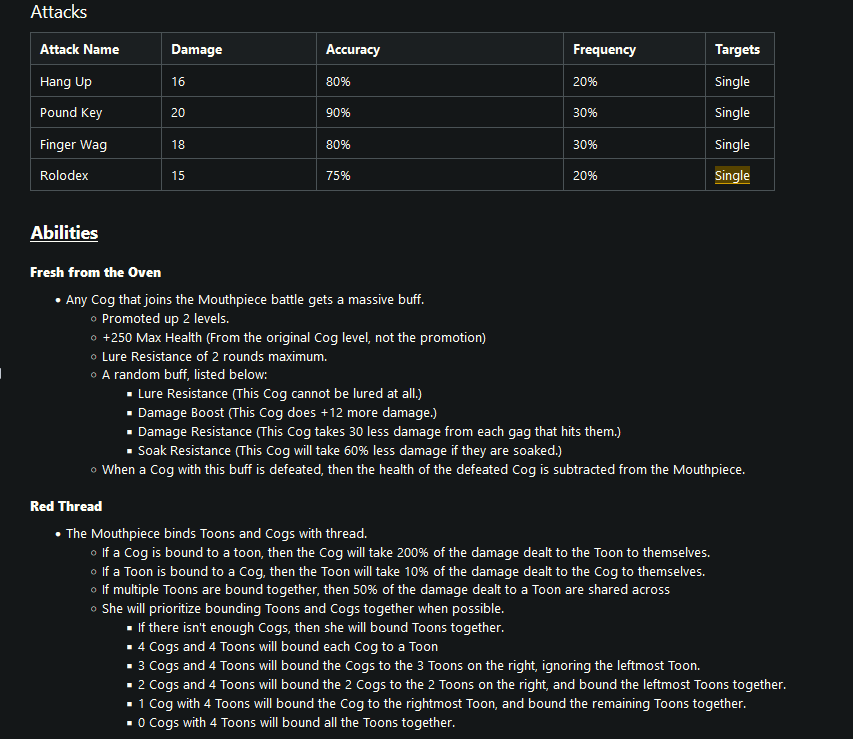

I currently work on a live-service MMO of a fan revival of Disney's Toontown Online called Toontown: Corporate Clash. I currently serve as one of two Game Design Directors for the game. Here is a collection of some of the bigger things I've worked on for the game, contributing countless hours to designs, balancing, and testing before they hit the live servers.
One of Corporate Clash's newly beloved features that got introduced with update v1.3 was the Gumball Machine, which allowed players to exchange a new currency called Gumballs earned from fighting bosses and doing activities around the game for rare and unique cosmetic items. The machine houses numerous prizes from boosters to aide gameplay, cosmetic clothing that's newer and from years past, profile poses and backgrounds, and tons of accessories to choose from. The concept of the machine was designed entirely by myself, but originally it was a stand with one of our characters, Lynn Decisive. Over time, the idea evolved into a sentient gumball machine that would be positioned inside of our in-game quest hubs.
The Gumball Machine in-game!

A snippet of the Game Design Document I worked on for the initial concept of the machine.
One of Corporate Clash's new Manager boss Cogs that arrived with v1.3, and probably one of the most infamous ones, known for being extremely tricky and difficult to figure out. The Chainsaw Consultant's battle includes several puzzle elements tied in with a R.E.V. system (like chainsaw revving!) that the player must control and keep an eye on. With enough knowledge, the player can learn how to manipulate the battle the way they want it to go. But with enough reckless play, it's easy to fall to this boss fight. This fight took about eight hours total over the session of one very long meeting to design, and countless hours in testing to ensure all scenarios played out the way we wanted them to.

An in-game screenshot of the fight.
An image of the Chainsaw Consultant using one of his signature abilities, Revving Up, which allows him to use gained Rev points to do certain abilities.
If you're interested to see the entire fight, you can view this video which has a live blind reaction/first clear when the boss finally hit the live servers for players to go up against!
One last big project I worked on that I'll show (I've done a lot more, but I don't want to flood the page too hard), would be another Corporate Clash Manager boss, this one called The Mouthpiece. While I didn't contribute too much to the original design at release, I helped contribute greatly to the overhaul of the fight that released with the Summer Update, or Version 1.4. We realized after release of 1.3 that the fight for the Mouthpiece was extremely lackluster, and the fight needed a huge overhaul. We ended up pursuing my idea to revamp the fight, giving players a brand new remastered experience to enjoy.
An image of the Game Design Document for Mouthpiece, highlighting some of hew new abilities that were done by me!

An image of Mouthpiece using her new ability, Red Thread.
I'm constantly working on other projects, due to being on the Game Design Team (and management) for Corporate Clash. We're currently deep in the Hammerspace update, which aims
to completely change how the game handles inventory and optimizes it heavily. I can't share many details from that, but I've been working countless hours on that, and a secret
update that's coming after.
I'm also applying skills I'm learning in my other classes to start working on some games, as well as participating in some Game Jams around Florida and online with friends.